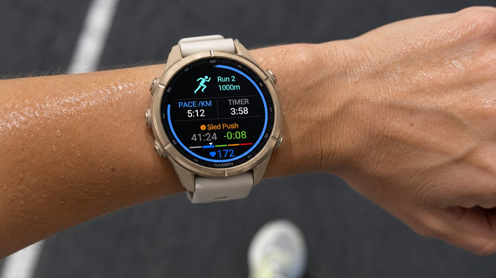
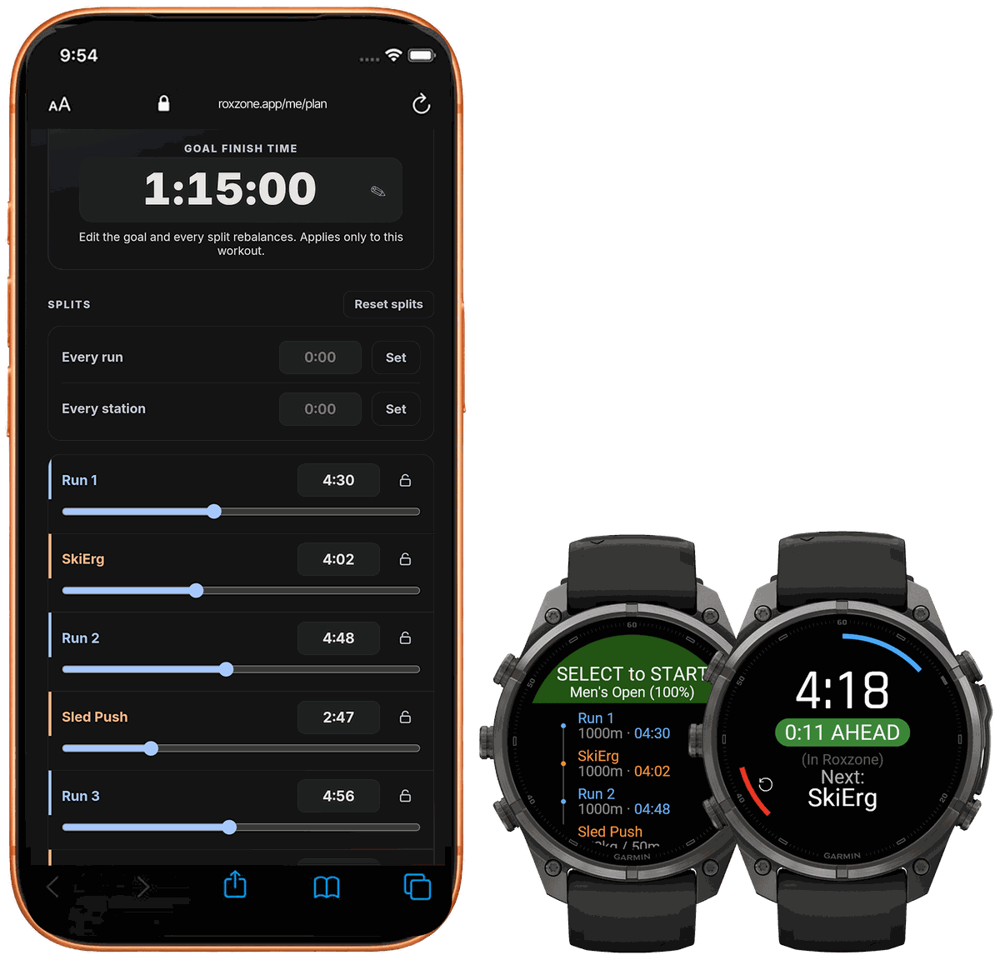
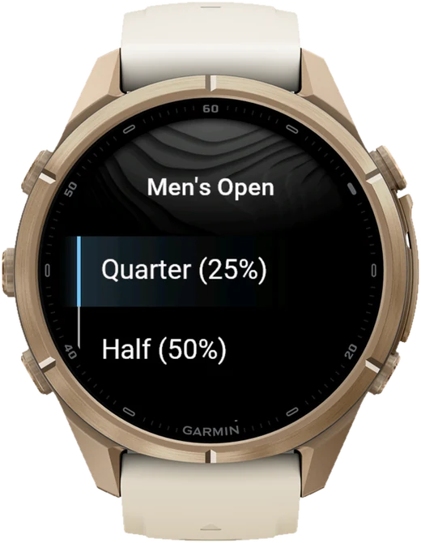
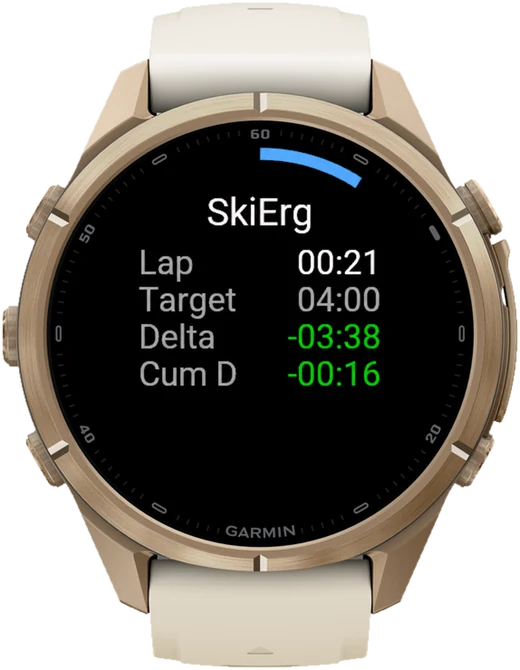

What pace to aim for in your first HYROX race

Ask people after their first HYROX race what they would do differently and you hear the same thing: I started too fast.
It is hard not to. Run 1 feels like a warm-up and the hall is loud. Then the stations start, and the half-minute you gained early is gone by the second sled.
Pacing a HYROX is mostly deciding in advance what each part should take, then believing it on the day. Here is how to choose a goal, split it across the race, and keep the plan on your wrist.
In short
- A first HYROX race commonly takes between an hour and a half and two hours, though plenty of people finish outside that.
- A half simulation is the best guide to your goal.
- Later runs are slower than early ones, and the Roxzone takes real minutes. Plan for both.
- Race Plan splits your goal across every run and station and puts it on your watch.
Pick a goal you can finish strong
For a first race a goal has one job, which is to stop you starting too fast. Whether it turns out to be exactly right matters much less. There are three sensible ways to arrive at one.
- From a half simulation. Do a 50% simulation at an effort you could hold for twice as long. Double your time, then add a few minutes, because the second half of a race is slower than the first.
- From your running. The eight runs make up about half of a HYROX, and every one after the first starts on tired legs. Expect to run well slower than your 10K pace.
- From a past result. If you have raced or done a full simulation, start from that time and take a little off.
It is worth making two plans for the same race: the goal you want, and a safer one. On race morning you decide which goes on the watch.
Why an even effort beats a fast start
In a HYROX every run starts with a station in your legs, and every station starts with a run in your lungs. Time you gain early is borrowed from later, and you pay it back with interest.
A good plan asks for an even effort, and an even effort means your pace drifts slower as the race goes on. The aim is to reach the wall balls with something left.
How a goal splits across the race
A goal does not divide into sixteen equal parts. This is how a 1:30:00 goal for Men's Open breaks down in Race Plan's first draft, before you change anything:
| Run | Target | Station | Target |
|---|---|---|---|
| Run 1 | 5:21 | SkiErg | 4:50 |
| Run 2 | 5:45 | Sled Push | 3:20 |
| Run 3 | 5:56 | Sled Pull | 4:33 |
| Run 4 | 6:03 | Burpee Broad Jumps | 5:31 |
| Run 5 | 6:13 | Rowing | 5:00 |
| Run 6 | 6:09 | Farmers Carry | 2:18 |
| Run 7 | 6:16 | Sandbag Lunges | 4:57 |
| Run 8 | 6:28 | Wall Balls | 5:56 |
| Roxzone, all transitions | 5:24 | ||
| Goal | 1:30:00 | ||
Three things stand out.
- The runs get slower. Run 1 is 5:21 and Run 8 is 6:28. If you plan 5:21 for all eight, you are behind your plan by halfway and chasing it for the rest of the race.
- The stations take very different times. A little over two minutes for Farmers Carry, and more than five and a half each for Wall Balls and Burpee Broad Jumps.
- The Roxzone gets 5:24. That is the time spent moving between the running track and the stations, and a plan that leaves it out will be wrong by about that much.
The draft uses the same proportions for everyone. You know things it does not, such as a strong sled push, or wall balls that fall apart after forty. The next step is where you tell it.
Race Plan
Build your plan

- Set the goal. Sign in at roxzone.app with the email you bought ROXZONE with, open Plan, choose the official race or a simulation, and enter your goal time. The first version of your plan appears straight away.
- Change what you know. Drag any split and the others rebalance, so the total stays on your goal. Lock the ones you are sure of and they stay put.
- Send it to the watch. Open the same workout on the watch and the plan loads by itself, with a target beside every run and station.
- Race to the plan. The watch shows how far ahead or behind you are, and gives a verdict at every press of the lap button.
Test the plan before race day
A plan is a guess until you have run it. Build one for a 50% simulation and do the session. In under an hour you learn which splits you held, where the ring went red, and how much your runs faded.


Move those splits, lock them, and build the full-race plan from what you learned.
After the race
Your result keeps every split by name, so you can put it next to the plan. With Online Results switched on, it is saved to your account at roxzone.app, in My ROXZONE, where it stays with every other session you record.
Three things are worth a look: the stations that ran over, how much slower Run 8 was than Run 1, and your total time in the Roxzone, which is often the easiest place to gain time.
Then build the next plan from that result. Lock the splits you now know and move the goal. That is most of why second races tend to go better: the pacing is no longer a guess.
Over a season, Home in My ROXZONE shows whether training is working: run pace over your last five runs, your weeks split into run, station and Roxzone time, and your best times.
Common questions
What is a good time for a first HYROX?
A first HYROX race commonly takes between an hour and a half and two hours, though plenty of people finish outside that. For a first race the goal has one job, which is to stop you starting too fast.
How fast should I run in a HYROX?
Well slower than your 10K pace. The eight runs make up about half of the race, and every run after the first starts on tired legs.
Should I run every kilometre at the same pace?
No. Aim for an even effort, which means your pace drifts slower as the race goes on. In a 1:30:00 plan for Men's Open, Run 1 is 5:21 and Run 8 is 6:28.
How much time does the Roxzone add?
In a 1:30:00 plan it is about five and a half minutes across all the transitions. A plan that leaves it out will be wrong by about that much.
How do I work out my goal time?
The best guide is a half simulation. Do a 50% simulation at an effort you could keep up for twice as long, double the time, then add a few minutes.